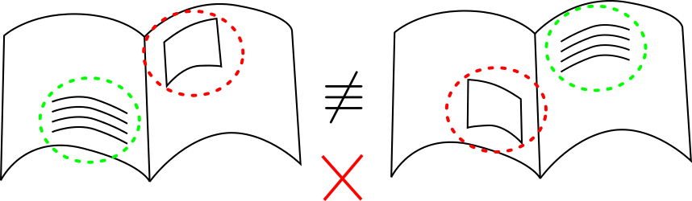
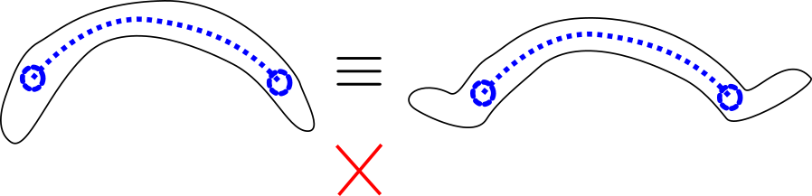
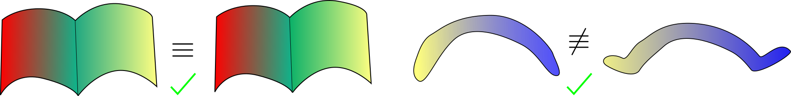

Time Consistent Surface Mapping for Deformable Object Shape Control
Ignacio Cuiral-Zueco, Gonzalo López-Nicolás
I. Cuiral-Zueco and G. López-Nicolás are with Instituto de Investigación en Ingeniería de Aragón, Universidad de Zaragoza, Spain. ignaciocuiral@unizar.es, gonlopez@unizar.es.
1 Introduction
Robot-based deformable object manipulation is present in a variety of tasks (e.g., deformable object transportation (López-Nicolás et al., 2020; Sirintuna et al., 2024), linear object manipulation (Lv et al., 2022), cable untangling (Huang et al., 2024), object cutting (Han et al., 2020), etc.). These tasks may involve different types of deformable objects which, within the field of robotics, can be classified according to several criteria (Herguedas et al., 2019; Sanchez et al., 2018; Yin et al., 2021). Our goal is to achieve 3D shape control by using robots to manipulate deformable objects into acquiring a desired target shape (Cuiral-Zueco and López-Nicolás, 2024). At a high level of abstraction, the notion of target shape refers to the shape we want the object to achieve. However, generating a mathematically grounded definition of shape error that covers a broad range of shape control cases is challenging, specially for 3D texture-less objects that present symmetries or lack geometric distinctive features. We propose a shape error formalization that adapts to deformations experienced by the object and remains temporally consistent, and thus constitutes a proper shape control reference.
Our approach, illustrated in Fig. 1, involves the use of a 3D sensor (e.g., an RGB-D camera) to perceive the object and generate a mesh of its visible surface. Our proposed time-consistent surface mapping allows for the comparison of the current shape with the reference (target) shape, and generates a surface map that enables us to generate an input reference for the shape control strategy. The shape control strategy generates 6 degrees of freedom (DoF) actions for each robot involved in the manipulation of the object, thus deforming it towards the desired shape.
Figure 1. Overview of the proposed approach. At the top, the main objective of deforming an object into a desired shape is illustrated with a sequence of deformation states (red mesh). A general outline of the proposed shape control framework is shown, and our experimental setup is illustrated on the right side of the figure. A 3D sensor (e.g., an RGB-D camera), provides the RGB-D images from which the object's mesh is retrieved at each iteration. The current object mesh is compared to the target mesh by means of our proposed time consistent surface mapping method. Our main contribution entails generating surface maps that allow defining the shape control reference, thus serving as input for the shape control strategy. A 6 DoF action is defined for each of the robots involved in the manipulation of the object.
1.1 Related work in shape control
Regarding the shape control literature (Zhu et al., 2022), there is a variety of approaches and control reference definitions. Some methods define their control reference with the use of feature points on the object’s surface (e.g. (Navarro-Alarcon et al., 2016; Aranda et al., 2020; Shetab-Bushehri et al., 2022; Berenson, 2013; Deng et al., 2024)). Method in (Berenson, 2013) defines its error reference as the alignment of a set of (provided) points, whereas (Shetab-Bushehri et al., 2022) defines the error reference using the nodes of a planar deformation mesh that is updated by means of visual features. The deformation planning approach in (Deng et al., 2024) uses visual markers (laser-reflective features) to determine the object's shape. Other methods focus on deformable object transport, this is the case of (López-Nicolás et al., 2020) which uses a rigid Procrustes optimization to define a homogeneous contour point matching between planar shapes. Some approaches like (Aranda et al., 2020) focus on isometric deformations of planar objects with monocular perception by using few feature points and a Shape-from-Template analysis. Methods like (Cuiral-Zueco and López-Nicolás, 2021) tackle both isometric and elastic deformations of planar objects by defining a contour mapping based on a multiscale Fast Marching Method. Strategies like (Navarro-Alarcon and Liu, 2017; Zhu et al., 2021; Qi et al., 2022) tackle the manipulation of deformable objects, defining the control strategy by means of (2D) contour moments. However, they are limited to the analysis of the 1D contour (embedded in 2D or 3D) of the object's visible silhouette. Similarly, deformable linear object (DLOs) manipulation methods (e.g., approach in (Caporali et al., 2024)) typically define shape references by mapping the curves (1D domains) that represent DLOs. For example, the method in (Caporali et al., 2023) matches DLOs through B-spline representations. However, mapping 2D surfaces (embedded in 3D) for deformable object shape control remains a challenge.
1.2 Related work in surface correspondence
As this paper makes extensive use of functional maps, we provide a specific review of the relevant computer graphics literature. Functional maps, introduced in the shape correspondence context in (Ovsjanikov et al., 2012), are a robust and efficient tool for isometric shape surface mapping. Since (Ovsjanikov et al., 2012) was published, several proposals have modified and extended the use of functional maps for diverse and demanding challenges such as partial mapping of shapes (Rodolà et al., 2017), surface-orientation preserving correspondences (Ren et al., 2018) or vector-field transfer between surfaces with the use of complex functional maps (Donati et al., 2022). Other functional map based methods focus on a coarse-to-fine shape analysis. This is the case of (Eisenberger et al., 2020), in which smoothed versions of the shape, along with a Markov chain Monte Carlo initialization, allow refining the mapping process at different levels of detail. An interesting alternative is the ZoomOut method, proposed in (Melzi et al., 2019), where a coarse-to-fine analysis is also performed.
1.3 Problem motivation

(Visual texture based error)

(Feature-based error)

(Surface map based error)
Figure 2. Three different shape error criteria (a, b and c). (a) shows a visual texture-based criterion in which, although both shapes are the same, their visual descriptors present different positions and lead to non-zero error. (b) shows a feature based shape error definition that does not consider all the object's geometry. The descriptor (two discrete points and a segment's curvature) is identical in both cases and thus leads to zero shape error even-though the shapes are different. (c) involves a geometry based surface map that considers all the object's geometry and does not depend on visual texture, leading to proper shape analysis on both comparison cases.
Surface mapping defines a continuous function that maps points from one surface to another, based on their geometry. This technique is relevant in computer graphics for producing realistic animations and effects, as it ensures that textures accurately adapt to the shape of an object, even when the object deforms. When applied in synthetic environments, such as simulations and animations, maintaining mapping consistency during surface deformations is straightforward, as the positions of all mesh nodes are always known. However, applying surface mapping to texture-less real-world objects poses considerable challenges (e.g., ground-truth point positions are not known, sensor data may be noisy and incomplete, etc.). Therefore, significant efforts are needed to ensure mapping consistency during surface deformations in real scenarios. We define time-consistent surface mapping as the process of computing and updating surface maps so that they adapt to surface deformations, specifically considering surfaces acquired from sensor data. Thus, time consistency expands the applicability of surface mapping to real-world scenarios, closing the gap between synthetic models and real-world practical applications. To name some potential applications of time-consistent surface mapping: shape control of deformable objects in manufacturing processes (tackled in this paper), quality control in the food industry, object texture-transfer in augmented reality, or surface mapping in real non-rigid environments (e.g., laparoscopies).
A challenging goal in the context of 3D shape control is to define a geometry based holistic shape error. We propose defining such shape error through 3D surface maps computed by means of functional maps (see a brief introduction to functional maps in section 2.1). Functional maps can be of great interest in defining a reference for shape control because, in comparison to other shape control reference definitions from the literature, they:
ıtem allow generating geometry based surface maps. Some shape control methods base their shape error on visual texture (e.g., (Shetab-Bushehri et al., 2022)). However, even if an object presents rich visual texture, such texture is not necessarily representative of the object's shape (see Fig. 2.a). Furthermore, repetitive or symmetric visual patterns may lead to ambiguities, further limiting texture-based methods.
ıtem a holistic shape analysis, in which all the object's available geometric information is considered. Existing shape control methods such as (Navarro-Alarcon et al., 2016; Hu et al., 2018; Mo et al., 2020; Deng et al., 2024) define their shape error through a reduced number of features that need to be properly defined beforehand (depending on the object's shape) and could lead to ambiguities (see Fig. 2.b). Thus, such approaches are limited to the amount and variety of available features that the object presents.
ıtem favour isometries and seek maximising curvature resemblance. These two aspects lead to the minimisation of stretching/compression and bending deformation processes.
Note that surface mapping methods from the functional maps literature are not directly applicable to shape control, as it constitutes a relatively different problem. We will now discuss the difficulties and challenges that need to be addressed.
1.4 Contributions
The following is a summary of the challenges we have addressed and the main contributions of the 3D shape control framework presented in this paper.
1.4.1 We generate time-consistent functional maps along iterations
The functional maps literature focuses on the computation of functional maps between two specific static shapes, whereas shape control requires the consistent computation along iterations of functional maps between an evolving (deforming) shape and a target shape. As the object deforms and acquires different shapes, new minima may appear in the functional map computation process, leading to solutions (functional maps) that may differ greatly from the initially computed functional map.
1.4.2 We compute consistent surface point tracking during deformation processes
Time consistent functional maps alone are not sufficient for generating a proper shape control error: a functional map based shape error would be defined in terms of the shape's Laplace-Beltrami basis and thus be invariant to isometries. That is, if two different shapes constitute an isometry, their bases are identical and thus would lead to zero error. Therefore, it is necessary to define a point-to-point based error, something that would be straightforward in virtual mesh deformations (simulations) as the shape's node ground-truth positions are known. However, in a real setup, a new set of the object's 3D points is acquired in each iteration (with varying number of points and arbitrary index/order). Our method allows to consistently track surface points during the deformation process and thus compute deformation Jacobians and time-consistent point-to-point error vectors that are suitable for shape control.
1.4.3 Our method allows for computation times that are suitable for industrial use
We managed to remain above 5 [Hz] in the computation of the time-consistent surface maps. The functional maps literature prioritises fineness over computational time; they tackle a different problem (mapping between two static virtual surfaces) and face challenging bench-marking in terms of accuracy. Generally, methods analyse highly detailed meshes (\(\approx10.000\) mesh nodes), use sophisticated shape descriptors (e.g., wave-kernel signature (Aubry et al., 2011)) and solution searching methods (e.g., MCMC initialization (Eisenberger et al., 2020)) that typically require minutes of processing to obtain refined results. Our framework is based on one of the fastest methods in the computer graphics literature (ZoomOut method (Melzi et al., 2019)) and, without the use of shape descriptors, we achieve a compromise between fineness (\(\approx 500\) mesh nodes), computational time (\(\leq 0.2\, [s]\)), and robustness.
1.4.4 Our proposed framework is robust to non-isometries and problems arising from real data
Surface mapping methods in the functional maps literature typically analyse mesh datasets with fine and smooth meshes in which target shapes constitute isometries (Anguelov et al., 2005; Cosmo et al., 2016). Surface mapping of large non-isometries is still an ongoing challenge in the computer graphics literature and, in this paper, we do not solve it in a formal and general manner. However, we do achieve robustness of our system to non-isometric deformations. Regarding real data derived problems, a realistic industrial set-up will most likely involve the use of affordable 3D sensors, such as RGB-D cameras, that provide noisy and varying/incomplete data. Aspects like object occlusions (e.g., object self-occlusions), unsuitable sensor position or sensor's limitations (reflections, bad illumination, etc.) can cause sudden variations on the mesh. Our framework is robust to these problems, as it uses information from previous iterations in a coarse-to-fine manner.